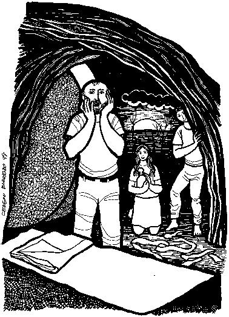

This week's lessons: Acts 10:34-43 or Isaiah 25:6-9, Psalm 118:1-2, 14-24, 1 Corinthians 15:1-11 or Acts 10:34-43, John 20:1-18 or Mark 16:1-8
Misioneros
Del Sagrado Corazón en el Perú

Cerezo
Barredo's weekly gospel illustration
Next Week: Acts 4:32-35, Psalm 133, 1 John 1:1-2:2, John 20:19-31